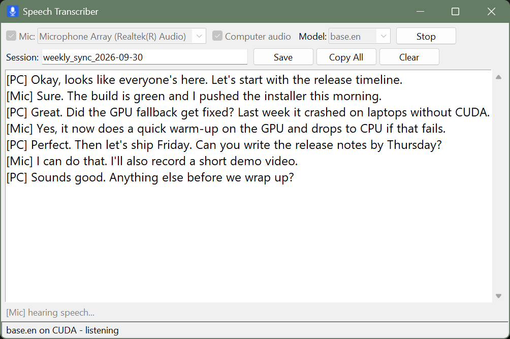

Speech Transcriber
Offline live transcription of mic + PC audio.
How it works
- Capture. Mic and a speaker loopback are each recorded on their own thread in 100 ms blocks at 16 kHz.
- Segment. A running noise floor detects speech; 0.6 s of silence (or 15 s max) ends a phrase. Blips under 0.3 s are dropped.
- Transcribe. One shared faster-whisper model handles phrases from both sources in arrival order, on GPU or CPU.
- Save. Ctrl+S writes
saved_histories/<session>.mdwith an LLM instruction for a summary and next steps.
Features
- Fully local via faster-whisper; offline after the first model download.
- CUDA when available, automatic CPU fallback.
- Models:
tiny.en,base.en,small.en. - Copy All copies instruction + transcript to the clipboard.
- Single Windows
.exeviabuild.bat.
Quick start
Windows: download transcriber.exe from the latest release and run it. Or from source:
pip install -r requirements.txt python transcriber.py
Linux: ./setup.sh then ./run.sh (these scripts are Linux-only). GPU setup and building: see the README.